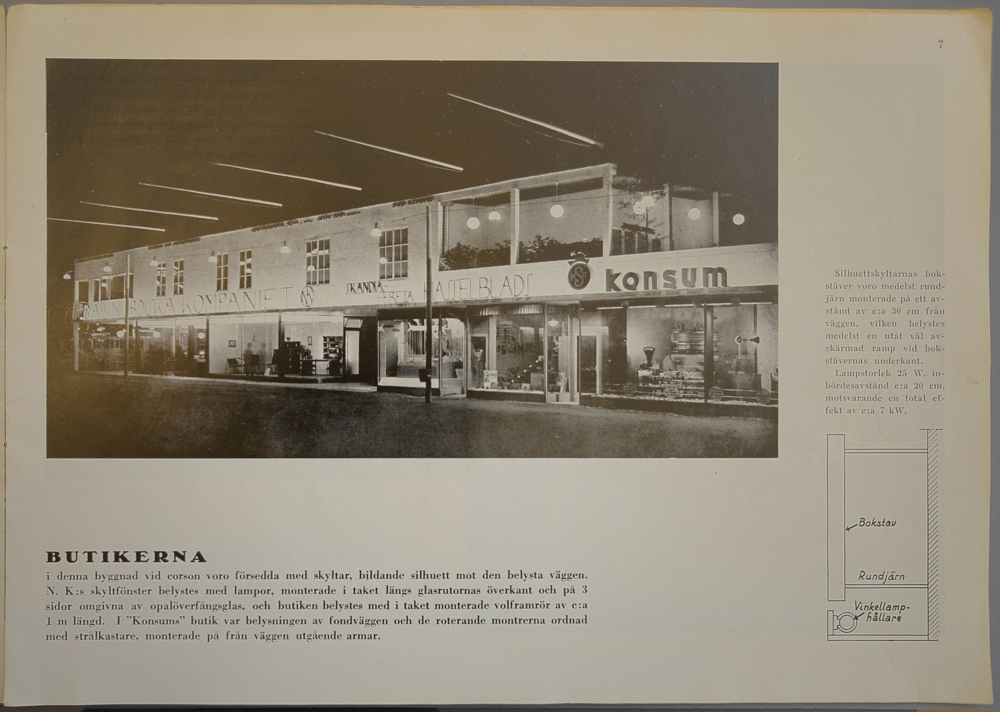
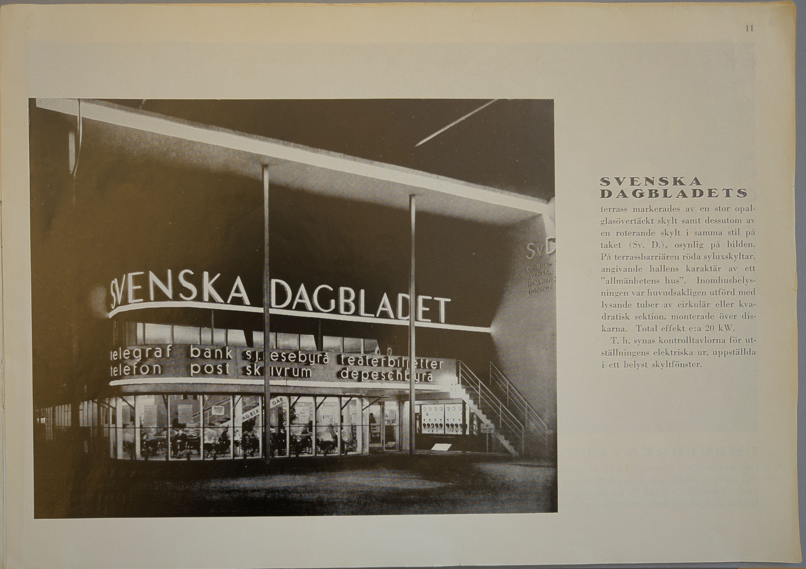
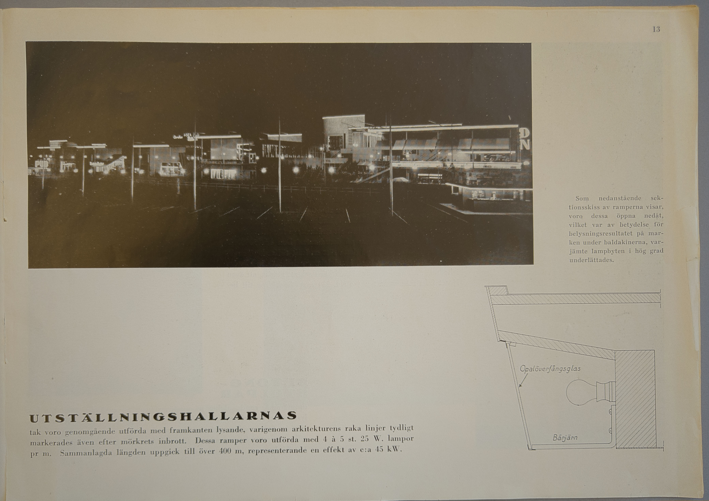
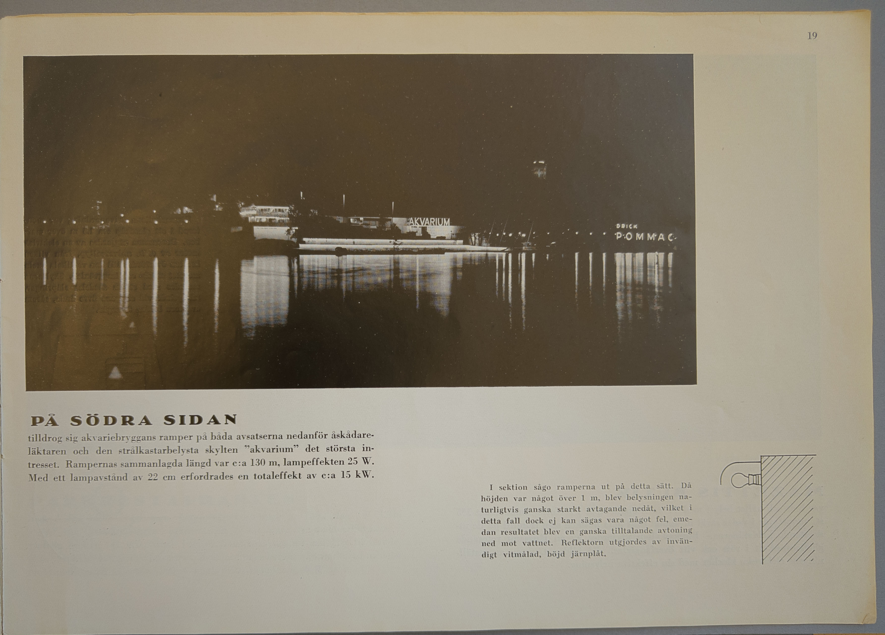

Bilder
Transkribering
Handskrivet med blyerts: Stockholm-1930 nr 8 utst.- kat. svenska
DET ELEKTRISKA LJUSET
PÅ STOCKHOLMSUTSTÄLLNINGEN 1930
Handskriven dedikation: Till Fil. d:r Gregor Paulsson vördsamt från Ivar Folcker
Stämplar:
ARKIVEXEMPLAR
SVENSKA SLÖJDFÖRENINGEN STOCKHOLM 7

Handskrivet med blyerts, övre vänstra hörnet: F3D:3 [Arkivbeteckning för den volym hos Centrum för Näringslivshistoria som broscyren ingår i]
PLAN ÖVER UTSTÄLLNINGEN
Den bruna linjen markerar en rundvandring på utställningsområdet vid vilken de å sidorna 3-21 återgivna bilderna äro tagna. Cirklarna markera den punkt från vilken resp. bild är tagen, pilarna kamerans inriktning och siffran den sida i broschyren på vilken motsvarande bild återfinnes.

Handskrivet med blyerts: Stockholm-1930 nr 8 utst.- kat. svenska
Bildtext: Det elektriska ljuset bildade ett uppmärksammat inslag i Stockholmsutställningen 1930. Totalvy från Skansen.
Många högst beaktansvärda bidrag till belysningsteknikens utveckling leda sitt ursprung från på utställningar gjorda erfarenheter. Detta gäller speciellt i avseende på den tillämpade elektroljustekniken, vilken, på grund av sin allmänt erkända betydelse som publikattraherande medel under senare år på ett flertal utställningar ägnats mycket stor uppmärksamhet. Särskilt ha utställningarna i Barcelona i fjol och i Antwerpen under innevarande år rykte om sig att ha uppvisat storartade elektriska ljuseffekter.
Det samma torde även i viss mån kunna sägas om Stockholmsutställningen 1930. Även om här belysningsanordningarna i gemen präglades av större måttfullhet än i de båda förstnämnda fallen, representerade dock "den elektriska ramen" ett mycket uppmärksammat inslag av åtminstone för vårt land hittills tämligen okända dimensioner. Då dessutom en hel del nya belysningsprinciper, till stor del utexperimenterade av utställningens arkitekter och ingeniörer i samarbete med ledande elektriska firmor, kommit till användning har även Stockholmsutställningen 1930 för den av belysningsfrågor intresserade haft ett rikt studiematerial att bjuda på.
Av denna anledning ha vi trott det vara av ett visst värde att i denna broschyr sammanföra en del belysningsbilder från sommarens "funkisstad", kompletterade med vissa tekniska data och principskisser till ledning för dem, som ställas inför lösandet av liknande uppgifter. Samtidigt hoppas vi att bilderna, som självfallet endast ytterst ofullkomligt återge verkligheten, i någon mån skola bidraga till kännedomen om det elektriska ljusets stora anpassningsmöjligheter efter de mest skiftande förhållanden.
Stockholm i december 1930.
SVENSKA FÖRENINGEN FÖR LJUSKULTUR
Tryckt namnteckning: Ivar Folcker
Stämplar:
ARKIVEXEMPLAR
FÖRENINGEN SVENSK FORM Biblioteket
SVENSKA SLÖJDFÖRENINGEN Stockholm 7

Denna broschyr är sammanställd av civilingeniör Ivar Folcker i samarbete med ingeniör Gunnar Nilsson.
Vissa detaljuppgifter ha välvilligt ställts till förfogande av Stockholms Elektricitetsverk, Allmänna Svenska El. A.-B., Svenska A.-B. Philips, Nomeco A.-B., Ingeniörsfirman Teknik m. fl.
Foto: Florman och Halldin, Atelier Berghne, Stockholm.

HUVUDENTRÉN
13 st. fristående, 4-sidigt lysande pelare uppbära det svagt sluttande taket, längs vars kant en infälld, med opalöverfångsglas täckt ramp bildar en lysande linje. De 4 pelarna i väggen mot kommissariatet äro likaledes lysande, dock endast åt en sida. Pelarna ha en höjd av c:a 12 m och en sammanlagd längd av 175 m. Takrampen, som är utförd i enlighet med å sid. 13 visad principskiss, har en total längd av 132 m. Sammanlagd effekt för pelare och ramper c:a 55 kW.
Bildtext: Längd- och tvärsektion av pelare. Lamporna - 16 st. à 25 W. pr löpmeter - placerade diagonalt och i sick-sack, varigenom all skuggbildning av järnen bortelimineras. Sidorna av opalöverfångsglas, fäst vid de aluminiumbronserade vinkeljärnen medelst lister av rostfritt stål.

HALLEN FÖR SAMFÄRDSMEDEL
invändigt belyst med 15 st. snedstrålande spegelreflektorer à 200 W., monterade på pelarna. I arkaden framtill 18 st. industrireflektorer med 75 W. lampor. Byggnadens konturer här liksom på övriga hallar markerade med lysande ramper. I båtdäverten samt på katapultens tak strålkastare för belysning av den mitt emot belägna "sunkgarden". Mitt på bilden synes "Socialdemokraternas" lysande glaspelare och i fonden t.v. huvudentrén.

PRESSENS PAVILJONG
gav ett exempel på en med reflektorramp väl belyst väggyta. Rampen, c:a 4 1/2 m lång, innehöll 21 st. 25 W. standardlampor. På paviljongens tak voro 2 st. emaljreflektorer placerade, belysande Cloettaskylten, utförd av röda träbokstäver i blockstil.
Bildtext: Rampen var medelst 4 st. rundjärn fäst på ett avstånd från väggen motsvarande 1/4 av dennas höjd, varigenom hela väggfältet syntes jämnt belyst. Plåtreflektorn hade givits sådan form, att lamporna fullständigt avskärmades för åskådaren.

PLANETARIET
drog uppmärksamhet till sig dels genom sin silverglänsande kupol, belyst med strålkastare, placerade på närbelägna byggnader, dels genom sin ljusskylt i vitt ("Zeiss") och gult överfångsglas. På biljettkioskens tak angavs tiden för "Nästa förevisning" medelst en skylt av opalöverfångsglas med svart text och utbytbara siffror. Bilden visar även Stockholms-Tidningens ljusreklam i form av en strälkastarbelyst vägg samt skyltar i röd och blå neon.
Bildtext: Planetariets stjärnhimmel framställes medelst en apparat som med fullt fog kan betecknas som ett teknikens mästerverk, innehållande ej mindre än 119 små projektionsapparater, varmed planet- och stjärnbilder m.m. projiceras på kupolens insida. Planeternas rörelser framställas med hjälp av 7 st. elektriska motorer.

BUTIKERNA
i denna byggnad vid corson voro försedda med skyltar, bildande silhuett mot den belysta väggen. N.K:s skyltfönster belystes med lampor, monterade i taket längs glasrutornas överkant och på 3 sidor omgivna av opalöverfångsglas, och butiken belystes med i taket monterade volframrör av c:a 1 m längd. I "Konsums" butik var belysningen av fondväggen och de roterande montrerna ordnad med strålkastare, monterade på från väggen utgående armar.
Bildtext: Silhuettskyltarnas bokstäver voro medelst rundjärn monterade på ett avstånd av c:a 30 cm från väggen, vilken belystes medelst en utåt väl avskärmad ramp vid bokstävernas underkant.
Lampstorlek 25 W. inbördesavstånd c:a 20 cm, motsvarande en total effekt av c:a 7 kW.

ARMATURHALLEN
innehöll en utställning av dekorativt betonad belysningsarmatur. Var och en av de 6 deltagande firmorna disponerade ett vertikalt fack av hallen, vars sektion framgår av nedanstående skiss. Firmaskyltarna över resp. fack utförda av glödlampsbokstäver med överfångsglas i olika färger, vitt, gult, grönt och rött.
Bildtext: Armaturen var inom varje firmafack arrangerad så som skissen visar. Varje armatur var således individuellt inkopplingsbar medelst strömbrytare. Vid hallarnas stängning kopplades armaturerna 1-4 till ett kontaktverk, som automatiskt ombesörjde inkoppling av resp. firmors armaturer, varefter samtliga grupper på en gång inkopplades.

MUSIKPAVILJONGENS
originella kontur var markerad i ljus genom ramper, övertäckta med opalöverfångsglas av i princip samma utförande som hallarnas takramper. Upptill i hörnet en lysande lyra, utförd på samma sätt. Belysningen av själva estraden erhölls medelst spegelreflektorer, placerade på de lodräta pelarna.
Bildtext: Gatuarmaturen som användes för belysning av Corson, strandpromenaderna m.m. var av Stockholms Elektricitetsverks modell med överdel av galvaniserat gjutjärn och stålplåt samt djup reflektor av opalöverfångsglas, som helt döljer lampan vid normal blickriktning. Dessa armaturer voro monterade på 5 1/2 m:s höjd över marken i spänn om 3 à 4 st. mellan trästolpar eller, där så kunde ske, flaggstänger och träd. Inbördesavståndet mellan armaturerna = 3,5 m, lampstorleken i de flesta 150 W. Allt som allt voro c:a 350 st. armaturer av denna typ installerade på utställningsområdet, motsvarande en effekt av omkr. 52 kW.

SKYLTFÖNSTREN
i utställningshallarna hade ej som vanligt ljuskällorna placerade vid rutans överkant. Fönstrens stora höjd och ringa djup fordrade nämligen en lägre placering av belysningsanordningarna, som därför utförts som ramper tvärs över glasrutan, dolda bakom skivor av opalöverfångsglas, varigenom överensstämmelse med takrampernas horisontala linjer uppnåddes.
Bildtext: Ramperna voro utförda med vinkellamphållare, monterade på trälist, vid vilken även den något snedställda glasskivan var fäst medelst en metallram. 6 st. 40 W. lampor pr m.

SVENSKA DAGBLADETS
terrass markerades av en stor opalglasövertäckt skylt samt dessutom av en roterande skylt i samma stil på taket (Sv. D.), osynlig på bilden. På terrassbarriären röda syluxskyltar, angivande hallens karaktär av ett "allmänhetens hus". Inomhusbelysningen var huvudsakligen utförd med lysande tuber av cirkulär eller kvadratisk sektion, monterade över diskarna. Total effekt c:a 20 kW.
T. h. synas kontrolltavlorna för utställningens elektriska ur, uppställda i ett belyst skyltfönster.

I HUVUDRESTAURANTEN
lade man först och främst märke till de lysande glastäckta barriärerna med svagt gula vertikala ränder samt stora sidenballonger med 1,5 och 1 m:s diam. Lampstorlek i dessa 300 och 150 W. Barriärerna, som voro försedda med 16 st. 15 W. lampor pr löpmeter, hade en sammanlagd längd av 150 m, varför den elektriska effekten uppgick till 36 kW. En druvklase, synlig längst t. v. å bilden, bestående av 120 st. glober med olikfärgade lampor, bildade ett lustigt dekorativt inslag, vilket även kan sägas om den 15 m långa ormen samt äpplet (2 m i diam.) i Paradiset. Skyltarna på fasaden voro utförda i överensstämmelse med barriärerna.

UTSTÄLLNINGSHALLARNAS
tak voro genomgående utförda med framkanten lysande, varigenom arkitekturens raka linjer tydligt markerades även efter mörkrets inbrott. Dessa ramper voro utförda med 4 à 5 st. 25 W. lampor pr m. Sammanlagda längden uppgick till över 400 m, representerande en effekt av c:a 45 kW.
Bildtext: Som nedanstående sektionsskiss av ramperna visar, voro dessa öppna nedåt, vilket var av betydelse för belysningsresultatet på marken under baldakinerna, varjämte lampbyten i hög grad underlättades.

KANDELABRAR
av denna typ användes för belysning av festplatsen. Den 14 m höga betongmasten uppbär på en ring 9 st. reflektorer av opalglas med bländningsskyddande cylinder. Lampstorlek 300 W. Mastens överdel var utförd så att strålkastare för tillsatsbelysning lätt kunde anbringas på densamma. Den c:a 9000 m2 stora festplatsen erhöll på detta sätt en fullt tillfredsställande belysning med endast 5 st. kandelabrar och behövde således icke belamras med stolpar. Härvid är dock att märka, att även ljuset från reklammasten (se sid. 23) avsevärt bidrog till belysningen.
BETONGSTOLPAR
uppbärande runda glober av opalöverfångsglas, användes även för belysning av en del trädgårdsanläggningar och parkområden. Armaturens sfäriska form medför, att ej endast marken utan även lövverket belyses, vilket ur estetisk synpunkt är fördelaktigt. I dessa armaturer användes 150 W. lampor.

PARKBELYSNING
med helindirekt verkande armatur fanns även ett exempel på. Ljusströmmen alstras av en enda stor lampa (1500 W.) och fördelas via två olika stora, mot varandra vända reflektorer. Den synliga reflektorytan får på grund av sin storlek en för ögat behaglig ljustäthet.

FOLKRESTAURANTEN
med det ofta även för utställningen i sin helhet begagnade namnet "Funkis" lysande på taket. Bokstäverna i opalöverfångsglas, maximalt 1,5 m höga. Restauranten såväl inom- som utomhus belyst med tygglober av samma typ som användes i huvudrestauranten. En opalglasramp över utskänkningsdisken i fonden tjänar dels för belysning av denna, dels även som skylt.

VATTENFALLET
på nedre nöjesfältet bildade jämte den lysande pelaren en verkningsfull fond till gatan genom bostadsområdet. Det rinnande vattnet var genomlyst med olika färger på sätt som av skissen framgår. Medelst ett kontaktverk inkopplades successivt färgerna rött, grönt och vitt.

VID STRANDPROMENADEN
märktes särskilt den ute i vattnet uppställda skulpturen, belyst med en kraftig spegelstrålkastare, monterad helt osynlig under promenadens träbrygga. Bilden visar även en del av bron, vars linjer markerats med ramper innehållande c:a 1000 lampor à 15 W.

PÅ SÖDRA SIDAN
tilldrog sig akvariebryggans ramper på båda avsatserna nedanför åskådareläktaren och den strålkastarbelysta skylten "akvarium" det största intresset. Rampernas sammanlagda längd var c:a 130 m, lampeffekten 25 W. Med ett lampavstånd av 22 cm erfordrades en totaleffekt av c:a 15 kW.
Bildtext: I sektion sågo ramperna ut på detta sätt. Då höjden var något över 1 m, blev belysningen naturligtvis ganska starkt avtagande nedåt, vilket i detta fall dock ej kan sägas vara något fel, emedan resultatet blev en ganska tilltalande avtoning ned mot vattnet. Reflektorn utgjordes av invändigt vitmålad, böjd järnplåt.

MAZETTIS BUTIK
var helt och hållet belyst med 40 watts opallampor i rörform, sammanlagt 155 st., monterade i rader såväl invändigt runt hela butiken som framtill på de utskjutande baldakinerna. Butiksskylten utgjordes av en långsamt roterande glödlampsskylt i rött och vitt överfångsglas. På bilden t. v. en av utställningens elektriska klockor med sin effektiva belysning.
Bildtext: Firmaskyltens drivanordning var monterad i ett glasskåp c:a 1.5 m över marken. Densamma utgjordes av en elektrisk motor av s. k. universaltyp, från vilken kraften överfördes till den vertikala axeln medelst snäck- och kuggväxlar. Skyltarna matades med ström medelst släpringar, inkapslade vid stolpens övre ända, såsom av stora bilden framgår.

PARKRESTAURANTEN
hade i sina olika avdelningar belysningsanordningar av flera slag. I "Lilla Paris" var ljusarkitekturen representerad av en ramp av opalöverfångsglas i vinkeln mellan tak och vägg. Utefter fönstren synes en rad lågt hängande, olikfärgade glober av överfångsglas. Restaurantens kontur var markerad medelst en lysande linje, bildad av 600 st. opalsoffittenlampor à 40 Watt.
Bildtext: Glasrampen var utförd enligt nedanstående sektion med 8 st. 25 W. lampor pr m. För hela längden, som var 23 m., åtgick således 184 lampor och 4,6 kW.

DJURGÅRDSBRUNNSVIKEN
sedd från huvudentrén. T. v. över trädtopparna den stora reklammasten, vidare strandpromenadens horisontala pärlband av gatuarmaturer, bronslysande linjer, brokaféet samt södra sidans till akvariebryggan koncentrerade belysning. Vidare ses den i olika färger spelande fontänen, vars vatten underifrån belyses medelst i pontonen inbyggda strålkastare.

REKLAMMASTEN,
c:a 80 m hög, utgjorde den största ljusreklamanläggning som hittills utförts i vårt land. Ett flertal olika typer av såväl fasta som rörliga skyltar voro här representerade. Några data för de olika skyltarna följa här nedan:
Utställningsmärket: 585 lampor, 25 W. = 14,6 kW. Lyskanalerna övetäckta med s. k. "bicella" i gul och röd färg. Sammanlagd längd av båda vingarna c:a 17 m.
V. J., AfA, Hela Världen och HUSMODERN 129+159+330+280 lampor, 25 W., tillsammans 22,5 kW. Öppna lyskanaler. Slinga: 300 lampor 15 W., 200 lampor 25 W. summa 9,5 kW. Tändes löpande medelst kontaktverk, drivet av en motor på 1/16 hk.
DE 4 STORA. System "sylux" med bokstaverna i gul och siffran i röd färg. 276 lampor à 40 W. = 11 kW. Roterande kring en vertikal axel.
LÄKEROL. 1300 lampor, 15 W., i dubbla rader, hälften vita, hälften gröna, alternativt inkopplade. Effekt pr grupp 10 kW.
Röda Sigillet's röd neon 13/14, och HALSDUKAR blå neon 16/18, mm:s rördiam. 1,30 resp. 1 m. höga, total strömförbrukning 2,2 kW.
Philips, Radio, Lampor, Armatur, röd neon 16/18 och 13/14 mm:s rördiam. Bokstavshöjd 1,40 och 0,70 m, stjärnan 2,60 m. diagonalt mellan spetsarna. Tillsammans 3 kW.
Mazetti med linje och ögon: 24 lampor, 25 W., 203 lampor, 40 W., summa 8,7 kW. Mazetti gul sylux, ögonen transparenter, som tändas och släckas med kontaktverk.
Ramlösa Water med flaska: gula volframlysrör, största höjd 5 m, effekt 2,6 kW.
Klockan belyst med en strålkastare på 3 kW. I masttoppen en roterande strålkastare med 3000 W. lampa, driven av en motor på ungefär 1/25 hk. Hastighet 5,7 v/min.
Utbytbara texter på pressläktaren, röd neon, 85-90 st. bokstäver, 25 cm. höga. C:a 1,2 kW.
Totalt för hela masten c:a 92 kW.
På bilden synas även några andra skyltar, placerade på huvudrestauranten. PARADISET och SVEA RIKE glödlampsbokstäver i rött resp. vitt överfångsglas, VÅRT HEM o. s. v .: röd och grön neon.

SAMMANFATTNING
De bilder, som ingå i denna samling, kunna givetvis ej giva en fullständig bild av de ganska omfattande belysningsarrangement, som utställningen kunde uppvisa. Däremot torde flertalet av de anordningar, som innebära något nytt, vara medtagna. Till slut kunna kanske några huvuddata rörande den elektriska anläggningen vara av intresse:
Erforderlig elektrisk kraft levererades av Stockholms Elektricitetsverk i form av trefas växelström, 6000 volt och 50 per. Leveransen skedde till en mätstation, belägen norr om Kavallerivägen invid gränsen till Lantbruksmötets område. Härifrån utgingo 6000 volts jordkabelledningar till 7 st. transformatorstationer, i vilka nedtransformering ägde rum till 220 volts huvudspänning, som distribuerades till de olika förbrukningsplatserna, huvudsakligen medelst jordkabelnät, varför utställningsområdet blev så gott som fritt från stolpar med undantag för dem, som uppburo gatuarmaturen.
Av transformatorstationerna voro 5 st. belägna på norra området och 2 på södra, de senare anslutna medelst sjökabel över Djurgårdsbrunnsviken. Av de förstnämnda stationerna var en placerad invid planetariet, en vid huvudrestauranten och en på nöjesfältet, var-dera med 2 st. transformatorer om 250 kVA. Fontänen såväl som reklammasten matades från 2 st. separata transformatorer om 175 kVA, den ena placerad vid Parkrestauranten, den andra nedsänkt i marken omedelbart intill reklammasten. Södra sidans transformatorkiosker innehöllo vardera en 100 kVA-transformator. Sammanlagt stod alltså 2050 kVA till förfogande.
Maximalt uttagen effekt uppgick för utställningen i sin helhet till 1716 kW., totala energiförbrukningen för tiden 10 maj-3 okt. utgjorde 1 469 600 kWh. I dessa siffror ingår även förbrukningen för motorer och apparater av olika slag. Huru stor del som kommer på belysningen är svårt att exakt angiva, då den ej uppmätts separat. Man torde dock komma sanningen nära, om effekten för belysning angives till 1200 kW. och energiförbrukningen för densamma till 1 000 000 kWh. Dessa 1200 kW. torde ha varit fördelade ungefär så, att på själva utställningsområdet åtgått för utomhusbelysning 300 kW., inomhusbelysning 250 kW. och ljusreklam 400 kW., tillsammans 950 kW., vartill kommer 250 kW. för all belysning på nöjesfältet.
[Tryckt av] KURT LINDBERG, STOCKHOLM

OBS.!
Vid bildernas numrering på kartan har tyvärr ett fel insmugit sig. Bilderna 15-21 återfinnas således på sidor med närmast högre nummer.
Återgivande av i denna broschyr reproducerade bilder tillåtes under förutsättning att källan angives.

Utgiven av
SVENSKA FÖRENINGEN FÖR LJUSKULTUR
STOCKHOLM
Pris 1 kr.